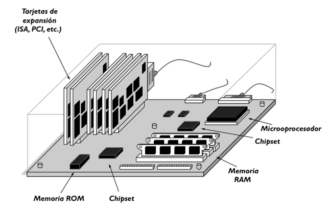

Elementos Constitutivos de un sistema computador
Created by edme88 & rmarku
Computadoras personales
Una computadora personal es un "Sistema No-Compartido" que cuenta con suficiente potencia de procesamiento, y capacidades de almacenamiento para satisfacer las necesidades de un usuario individual.
Evolución de las Computadoras
La evolución de las computadoras se suele agrupar en 4 generaciones:
| Primera | Segunda | Tercera | Cuarta | |
|---|---|---|---|---|
| Años | 1946-54 | 1955-63 | 1964-70 | 1971 |
| Tecnología (dispositivos y periodo de reloj) | Tubos de vacío. Memorias de Líneas de retardo ms | Transistores. Memorias de núcleos de ferritas us | C.I. (SSI y MSI) Memorias de C.I. ns | C.I (LSI y VLSI) Memorias DRAM ns |
| Arquitectura y Estructura | Aritmética de punto fijo | Aritmética exponencial. Regstros índices. Procesadores de E/S. | Microprogramación. Memorias cachés. Memoria Virtual | Microprocesadores. Arquitecturas RISC y paralelas |
| Sistemas Operativos | Sin S.O | Monitores batch | Microprogramación. Multiprocesamiento. | S.O. en red. S.O. distribuidos |
| Computadores Representativos | ENIAC, EDSAC, IAS, UNIVAC I, IBM 702,650 | IBM 1401,1620, 7094, UNIVAC 1004, CDC 6600, PDP-1 | IBM 360,370, DEC PDP-8, UNIVAC 1100 | Cray-1, DEC VAX, IBM-PC, MIPS, SPARC, RS-6000, HP 9000/750 |
Evolución de las computadoras personales
El término Personal Computer apareció por primera vez en la revista New Scientist en 1964, en un artículo llamado «El mundo en 1984».
Evolución de las computadoras personales
Originalmente el término "computadora personal" apareció en un artículo del New York Times el 3 de noviembre de 1962
1973 Xerox Alto, primera computadora personal
Computador: Definición
Una computadora es una máquina capaz de aceptar unos datos de entrada, efectuar con ellos operaciones lógicas y aritméticas, y proporcoinar la información resultadnte a través de un medio de salida; todo ello sin intervención de un operador humano y bajo el control de un programa de instrucciones previamente almacenado en el propio computador.
Computador: Estructura Funcional
Se compone de las siguientes unidades funcionales:
- Unidades de Entrada
- Unidades de Salida
- Memoria Interna
- Memoria Externa
- Unidad Aritmética-Lógica
- Unidad de Control
Microprocesador
Es un procesador implantado en un circuito integrado. Controla un conjunto de circuitos, formando con estos un sistema electrónico digital programable.
Placa Madre
La Placa Base es una tarjeta de circuito impreso PCB donde están trazados los buses principales y donde se insertan los dispositicos electrónicos principales del computador y las regletas para conexión de tarjetas de expansión. 
Memoria
Es una unidad donde se almacena la información que necesita el computador, es decir, tanto las instrucciones que forman los programas como los datos.
Fuente
Transforma la corriente alterna de suministro de energía eléctrica en corriente continua a los niveles
de tensión que requieren los distintos circuitos y elementos internos del chasis.
Para una Pentium 4 son: +5V (20 A), -5V (0,5 A), 12V (8 A),-12V (0,5 A) y 3,3 V (14A)
La alimentación del PC requiere una tensión alterna de 200-240V y consume en el orden de 2,5 A.
Dispositivos de E/S
Transforman la información externa en señales eléctricas codificadas permitiendo su transmisión, detección, interpretación, procesamiento y almacenamientode forma automática.
Placa de Video
La tarjeta gráfica es un circuito integrado de la placa base de la computadora que se encarga de procesar los datos provenientes de la unidad central de procesamiento (CPU) y transformarlos en información comprensible y representable en el dispositivo de salida (por ejemplo: monitor, televisor o proyector).
Buses
Son los hilos conductores en paralelo que permiten la interconexión entre los distintos elementos del computador para la transmisión simultánea de información (una palabra de datos, por ejemplo).
¿Dudas, Preguntas, Comentarios?